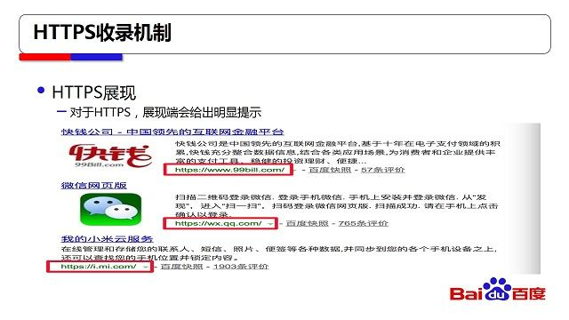

5 月 25 日，VIP大讲堂-网站安全那些事儿成功举办，现场发布百度对HTTPS站点全流程支持方案，收到站长们广泛关注!学院君贴心的将现场演讲提炼成文字版本带给大家，快来看吧!
HTTPS优势
HTTPS是基于tls和ssl加密的http协议，网络传输是加密的，因此它的安全是显而易见的，包括防窃听、篡改、劫持。
HTTPS的收录机制
1、Spider如何发现HTTPS
1)、根据网页中的超链接是否是HTTPS，网络中会有一些超链，如果是HTTPS会认为是HTTPS站点。
2)、根据站长平台提交入口的提交方式，例如主动提交，如果在文件当中提交的是HTTPS链接会以HTTPS的形式来发现。
3)、参考前链的抓取相对路径，第一个网页是HTTPS的，网站内容里面的路径提供的是相对路径，会认为这种链接是HTTPS。
4)、参考链接的历史状况，使用这种方式的原因主要是为了纠错，如果错误提取HTTPS会遇到两种情况，一种因为HTTPS不可访问会抓取失败，第二即使能抓成功可能展现出来的可能不是站长希望的，所以会有一定的纠错。
2、HTTPS链接的抓取
现在比较常见的两种，第一种是纯HTTPS抓取，就是它没有http的版本，第二个是通过http重定向到HTTPS，这两种都能正常的进行抓取跟http抓取的效果是一样的。
3、HTTPS的展现
对于HTTPS数据，展现端会有明显的提示

站长平台支持全站HTTPS配置
1、HTTPS配置
之前有一些站长改HTTPS，会疑问为什么站点有些链接是以http的形式来抓呢?为什么没有全站都是以HTTPS的形式来抓取呢?因为以前的机制是url级的，HTTPS抓完一条替换一条，整站需要全抓完才能全部替换掉，现在大家访问站长平台可以发现，左边工具栏多了HTTPS认证的功能，站长平台已经全站支持HTTPS，点这个功能后会有提示引导我们去怎么做，需要提醒是需要全站支持HTTPS，才进行点击，如果不支持的话对站点会有一些副作用。
2、HTTPS验证
当站长在平台上做了配置以后首先会有HTTPS验证，验证确认站长是否误配，具体会检查https链接是不是可抓取的。另外会对HTTPS的证书校验，包括它的合法性、是否过期、跟它本身的域名是否一致，从这三个角度做校验。
3、HTTPS生效
校验通过后，生效方式从这三个角度进行
1)、全站抓取以HTTPS的方式来抓，这会在抓取上做一定的切换
2)、全站的展现样式也会直接切换成HTTPS，用了这个功能的好处是会比以前快很多，会略过已收录的网页直接到HTTPS。
常见问题：
1、站长升级HTTPS是不是会影响爬虫抓取?不会。爬虫对https的合法链接都能抓
2、站长升级HTTPS是不是会影响索引量?不会的，建库做了相应升级，HTTPS的建库是不会有延迟的。
3、站长升级HTTPS是不是会影响排名点击流量?不会，HTTPS改造是不涉及到域名切换，或者说老域名到新域名样式的转变等等这个是不涉及的，可以做到完全无损的切换。
4、站长升级的HTTPS是不是会影响移动适配?不会有这种情况。
5、站长升级HTTPS是不是会影响站长平台工具?不会，站长平台链接提交等工具已经都支持HTTPS了。
站点建议
1、建议站长从http到HTTPS的 301 跳转，不建议只有HTTPS，而无http到HTTPS的跳转关系，只用HTTPS访问对用户来说，可能会遇到问题。
2、不建议HTTPS、http这两种版本并存，这种情况存在三种问题，第一个它的维护成本比较高，需要维护两个版本;第二个做不到绝对安全，http访问有不安全风险;第三有不一致的可能性，随着长远的发展这两个版本可能会越来越不一致，会影响用户体验，我们建议站长做了HTTPS之后能对HTTPS做一定的跳转预设。
3、HTTPS回退到HTTP极不建议。例如线上已经展示HTTPS的链接给用户点击，如果站长回退到http，用户在浏览器里面点开的时候会展现死链的样式是非常不建议的，做这个之前一定考虑。如果实在想做回退，请在站长平台提交HTTPS校验，并建议站点提前至少 24 小时在平台提交回退，这样能够保证站长的点击不会出现死链的形式，这点非常重要。
4、HTTPS网页没有建设完成之前不要在互联网上提供超链接，之前遇到过好几个case，本身HTTPS并没有做完，两个版本都存在，但是http是用户可访问的，或者说HTTPS的页面是一个临时性的假页面，这样站点有可能就以HTTPS的形式展现出来，会引起用户体验问题。